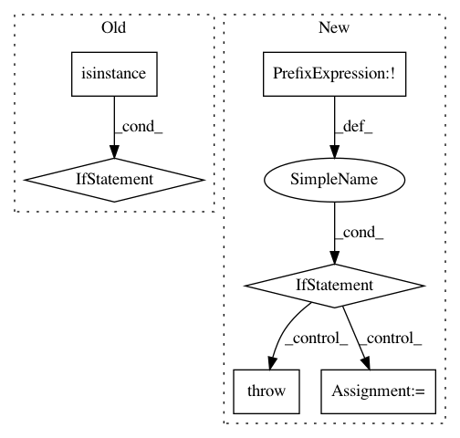

700abc65fd2172a2c6809dd9b72cf50fc2407772,allennlp/models/srl_bert.py,SrlBert,__init__,#SrlBert#Any#Any#Any#Any#Any#Any#Any#Any#,41
Before Change
) -> None:
super().__init__(vocab, regularizer)
if isinstance(bert_model, str):
self.bert_model = BertModel.from_pretrained(bert_model)
else:
self.bert_model = bert_model
self.num_classes = self.vocab.get_vocab_size("labels")
if srl_eval_path is not None:
// For the span based evaluation, we don"t want to consider labels
// for verb, because the verb index is provided to the model.
After Change
`TextFieldEmbedder`. For this model, this must be a `SingleIdTokenIndexer` which
indexes wordpieces from the BERT vocabulary.
verb_indicator: torch.LongTensor, required.
An integer `SequenceFeatureField` representation of the position of the verb
in the sentence. This should have shape (batch_size, num_tokens) and importantly, can be
all zeros, in the case that the sentence has no verbal predicate.
tags : torch.LongTensor, optional (default = None)
A torch tensor representing the sequence of integer gold class labels
of shape `(batch_size, num_tokens)`
metadata : `List[Dict[str, Any]]`, optional, (default = None)
metadata containg the original words in the sentence, the verb to compute the
frame for, and start offsets for converting wordpieces back to a sequence of words,
under "words", "verb" and "offsets" keys, respectively.
In pattern: SUPERPATTERN
Frequency: 3
Non-data size: 6
Instances
Project Name: allenai/allennlp
Commit Name: 700abc65fd2172a2c6809dd9b72cf50fc2407772
Time: 2020-02-03
Author: mattg@allenai.org
File Name: allennlp/models/srl_bert.py
Class Name: SrlBert
Method Name: __init__
Project Name: NervanaSystems/nlp-architect
Commit Name: 9267d77a87ac5d6736953f4822deab36b20945c7
Time: 2020-09-22
Author: daniel.korat@intel.com
File Name: nlp_architect/models/absa/inference/inference.py
Class Name: SentimentInference
Method Name: run_multiple
Project Name: GPflow/GPflow
Commit Name: baf110d82f60c51a5680e728cd3c5c6d3536117d
Time: 2017-09-24
Author: art.art.v@gmail.com
File Name: gpflow/params.py
Class Name: ParamList
Method Name: __init__